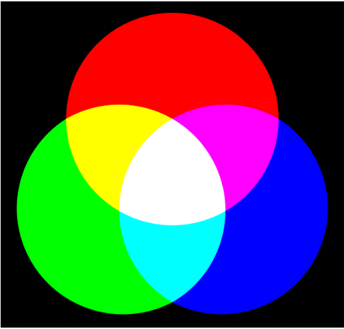

Los colores RGB que vemos en el monitor pueden llegar a ser muy distintos a la hora de imprimirse en el espacio de color CMYK. Pero hay formas de controlar los colores de tu obra y evitar sorpresas a la hora de imprimir. Este tutorial explica los modos de color RGB y CMYK y ofrece consejos imprescindibles para los artistas. Cuando lees documentos o ves imágenes en un monitor, los colores están compuestos por el modo de color RGB (Red, Green y Blue), porque todos los píxeles de un monitor están formados por esos tres colores. En las imágenes impresas por una impresora de tinta doméstica o industrial, o una imprenta offset, los colores se crean en CMYK (Cyan, Magenta, Yellow y Black), que son los colores de las tintas que tiene la impresora. CLIP STUDIO PAINT incorpora ambos modos de color y es importante diferenciarlos, pues siguen procesos distintos para reproducir los colores.
Nuestro sentido de la vista influye en cómo percibimos los colores. La retina, una membrana de células nerviosas concentradas en la parte posterior del globo ocular, contiene dos tipos de células fotorreceptoras: los conos y los bastones. Los bastones detectan los niveles de luz y los conos, de color. Los conos pueden ser de tres tipos, según la longitud de onda a la que reaccionen: A la luz de onda corta la llamamos “azul”, a la onda media “verde” y a la larga, “rojo”. En términos científicos, los seres humanos somos tricromáticos. Colores primarios aditivos: RGB Gracias a la tricromía somos capaces de percibir los colores primarios aditivos. Dadas tres fuentes de luz, si cada una emite una longitud de onda de forma que las tres abarquen todo el espectro visible, percibiremos el color blanco. Si usamos fuentes de luz (colores luz), comenzamos desde la oscuridad (negro) y vamos añadiendo luces de colores —de ahí el término “aditivo”. Para crear la luz blanca, se suma la misma cantidad de cada uno de los tres colores primarios. Los colores que percibimos dependen de la cantidad que estemos añadiendo de cada longitud de onda. Como estamos añadiendo luz, asociamos los tres colores primarios aditivos a dispositivos que emiten luz, como monitores o pantallas de televisión. Primarios sustractivos: CMY + K Los conos de nuestros ojos también perciben los colores primarios substractivos. Los colores primarios sustractivos son el cian, el magenta y el amarillo, y se refieren al color que refleja una superficie que absorbe luz blanca. En sistemas de impresión, dada una superficie blanca (un papel), se añade tinta (o pintura) de color cian, magenta y amarillo hasta conseguir el tono negro. Podemos decir que el amarillo es una especie de sustractor de ondas cortas, el magenta un sustractor de ondas medias y el cian, de ondas largas. Nota: No es posible conseguir un negro puro absoluto mezclando cian, magenta y amarillo, porque en realidad ninguno de esos pigmentos es lo suficientemente puro. Lo máximo que conseguiremos es un marrón muy oscuro. Por eso, al imprimir, se le añade el negro a los primarios. Se usa la letra “K” para no confundirla con la “B” del azul. El negro, sin embargo, no es un color primario. Espacio de color Los tres colores primarios no solo nos ayudan a describir los colores, sino también nos sirven para interpretar las relaciones entre los colores. Para ello, asignamos a cada primario un eje de coordenadas en un espacio tridimensional.
| Experiencias | Crecimiento | Aporte |
|---|---|---|
| Viajar por el mundo | Ser Ing | Fundar un refugio de amimales |
| Leer muchos libros | Poder manejar los diferentes lenguajes de programacion | Ayudar a las personas en cituacion de calle |